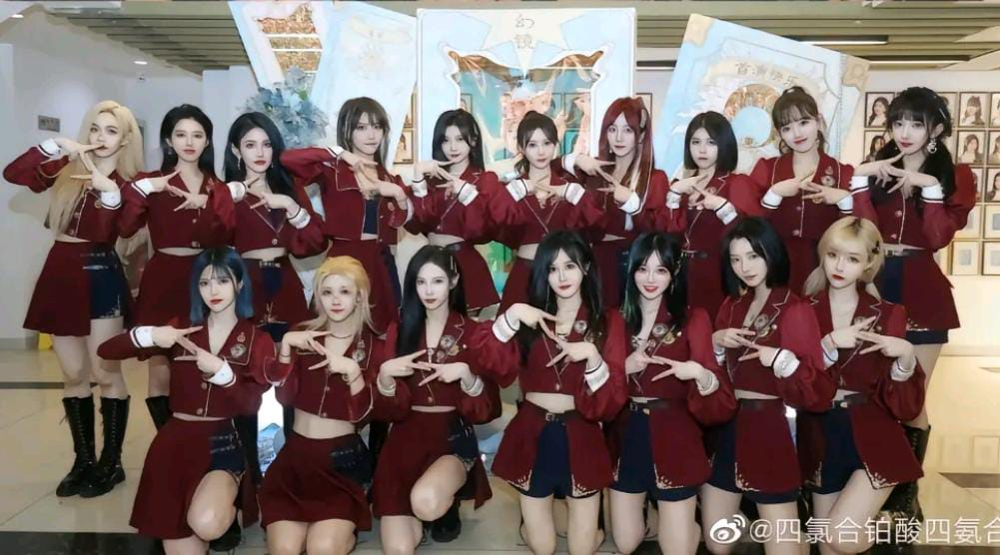
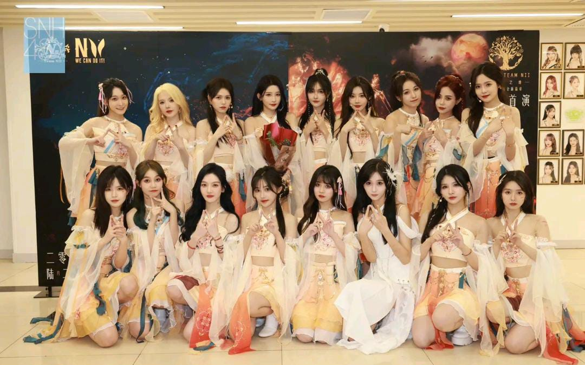

Team SII
• Tim SII adalah tim pertama yang dibentuk untuk grup SNH48. Warna tim mereka adalah Light Blue. Saat ini mereka memiliki 17 anggota dan 2 Anggota Pendukung, meskipun 1 orang telah mengumumkan kelulusannya.
• Kapten Tim SII saat ini adalah Duan YiXuan.
• MVP saat ini untuk Tim SII adalah Duan YiXuan.

Team NII
• Tim NII adalah tim kedua yang dibentuk untuk grup SNH48. Warna tim mereka adalah ungu. Saat ini mereka memiliki 19 anggota dan 2 Anggota Pendukung, meskipun 1 telah mengumumkan kelulusan.
• MVP saat ini untuk Tim NII adalah Bai XinYu

Team HII
• Tim HII adalah tim ketiga yang dibentuk untuk grup SNH48. Warna tim mereka adalah Tangerine Orange. Saat ini mereka beranggotakan 21 orang, meskipun 1 orang telah mengumumkan kelulusan.
• MVP saat ini untuk Tim HII adalah Zhang Xin

Team X
• Tim X adalah tim keempat yang dibentuk untuk grup SNH48. Warna tim mereka adalah Hijau Muda. Saat ini mereka beranggotakan 13 orang, meskipun 1 orang telah mengumumkan kelulusan.
• Kapten Tim X saat ini adalah Wang RuiQi.
• MVP saat ini untuk Tim X adalah Song XinRan dan Xiong ZiYi.